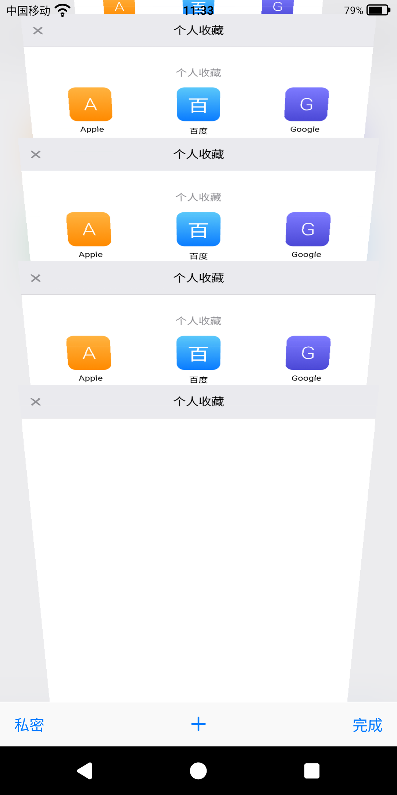

开源 · MIT · 1.7MB
安卓上类似 Safari 的浏览器 把 iOS 7 的标签页，重新做了一遍
点一下标签按钮，整张网页「塌」成一张带俯角的倒梯形卡片，落进卡片堆里；点卡片，它又拉伸回一整页。 这是 2013 年 iOS 7 Safari 最标志性的一幕 —— 现在它跑在 Android 上，用 Kotlin 和原生 View 逐帧复刻。

为什么它值得一看
不是换皮主题，也不是套壳浏览器。下面每一条都有对应的实现。
13D 抽屉式任务视图
动画里的卡片不是缩略图，是当前页面的真实像素：截图后逐条带做透视绘制，动画期间 WebView 不动、不重绘。
2和 Safari 一样的 UI
44dp 顶底栏、0.5dp 发丝线、蓝色胶囊地址栏、浮起的「取消」，图标全是 Canvas 画的，没有一张位图。
3顶栏底栏自动收起
往上滑，顶栏从 44dp 收到 24dp、底栏压到 0 并淡出。关键是网页不会重新排版，只做整数像素平移。
4任意网页双指放大
注入脚本放宽 maximum-scale，但保留网站原本的宽度和初始缩放，所以放大也不会把版式搞乱。
5书签 / 阅读列表 / 历史
iOS 那种三段式切换控件，支持编辑、删除、清空。数据存本地，不需要账号，也不联网同步。
6隐私模式
切深色配色，但页面和标签全部保留 —— 不像别的浏览器那样销毁再重建，也不记录历史。
极致轻量：1.7MB
一个现代浏览器动辄上百 MB，是因为它自带内核。这个项目不重复造内核。
- 安装包1.7 MB（1,744,402 字节）
- 浏览器内核调用系统 WebView
- 第三方依赖仅 androidx.core-ktx
- 图标矢量，3.4 KB
- 代码量7,421 行 Kotlin
- 许可MIT，可自由修改
Android 每个系统里都已经有一个 WebView，所以这里只做「壳」和交互：不打包 Chromium，界面全部自绘， 连图标都改成了矢量。
自己编一遍也很简单，装好 JDK 17 和 Android SDK 34：
git clone https://github.com/wzy2233/ios7-safari-android.git cd ios7-safari-android ./gradlew assembleDebug
常见问题
搜「安卓类似 Safari 的浏览器」的人，通常会问这几件事。
安卓上真的能做出 Safari 那种标签页效果吗？
能。难点在于 WebView 是硬件层，做不了梯形透视（那是非仿射变换）。这里的做法是「截真实像素 → 逐条带绘制」： 用 PixelCopy 读 GPU 合成后的画面，再交给自绘 View 按针孔相机模型一条一条贴图。动画期间 WebView 完全不动，所以不掉帧。
为什么只有 1.7MB？会不会功能很少？
体积小是因为不打包浏览器内核，用的是系统 WebView —— 这和「功能少」是两件事。地址栏动画、3D 任务视图、 双指缩放、书签/阅读列表/历史、分享面板、隐私模式、边缘滑动后退全都有。省下来的是内核的六七十兆。
和 iOS 上的 Safari 是什么关系？
没有任何关系。这是一个个人写的玩具项目，致敬 2013 年那套设计，与 Apple 无关联、未获授权。 仓库里也不包含任何 Apple 素材：图标是照着旧版截图重新量、重新画的矢量，字体用系统字体。
需要什么系统版本？能装在自己的手机上吗？
Android 8.0（API 26）及以上。到 Releases 下载 APK 直接安装即可（允许「安装未知来源应用」）。目前是 debug 签名，自己编译更放心。
可以拿去改吗？
可以，MIT 许可。改动画相关代码前建议先看仓库里的 架构文档， 里面记了一堆「看起来能简化、一改就抖」的地方。